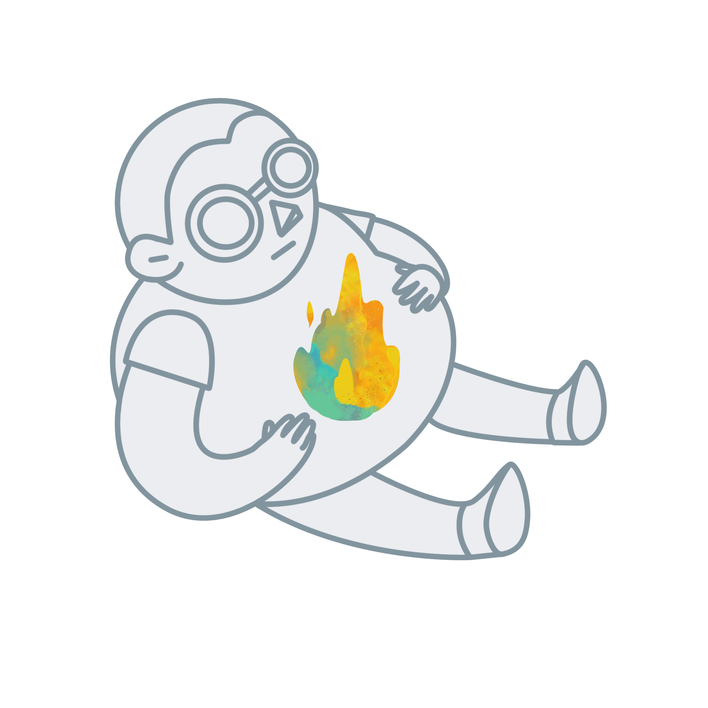

A place many long to escape to for sun, sea and serenity. But the Pacific islands have another reality for the residents living there
— Pacific islands is most obese nation
Percentages for obesity range from 35 percent to 50 percent throughout the islands, according to the the World Health Organization.
Islanders are literally suffered from diabetes, hypertension and other perils of adding too many pounds strike this population, which a generation ago had no Coke or canned pasta.
That is because for this region of the world, the concept is based on the fact Pacific islanders once endured long journeys at sea and those who fared best stored enough energy in the form of fat to survive their journey. Therefore, Pacific island populations have evolved to maintain their larger build -- a concept known as the "Thrifty Gene" hypothesis.
Thrifty genes are genes which enable individuals to efficiently collect and process food to deposit fat during periods of food abundance in order to provide for periods of food shortage (feast and famine).
It is also a genetic trait that promotes the storage of energy from the food you eat, minimizing the energy you burn off in the process.In other words it's a gene that makes it easy for you gain weight.


